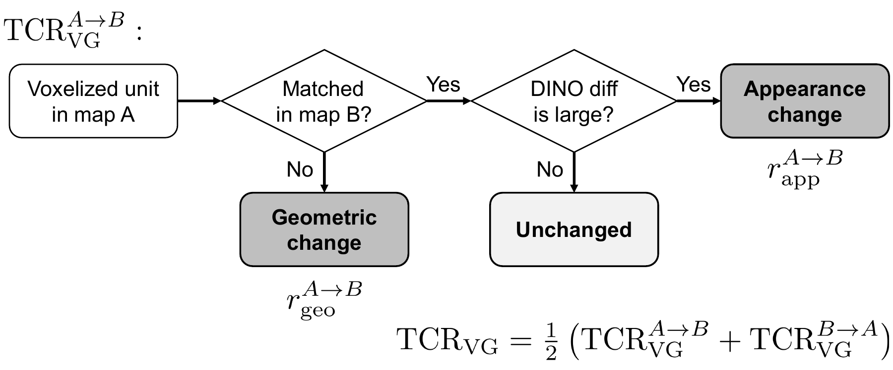
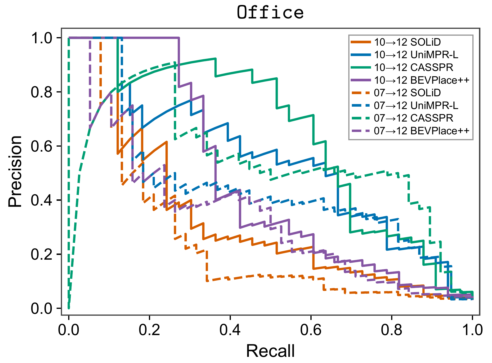
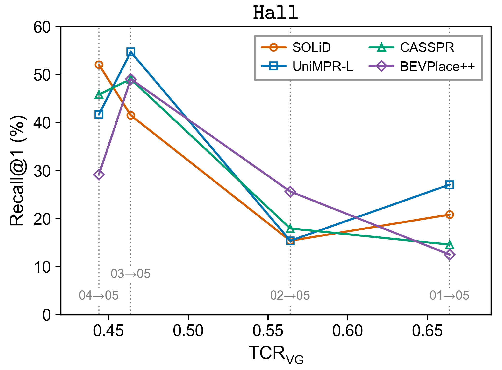
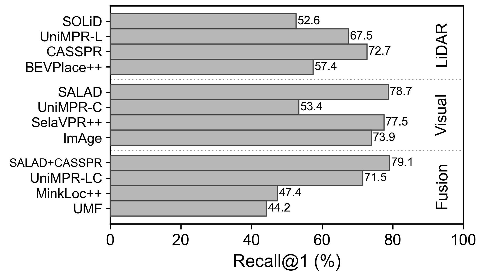
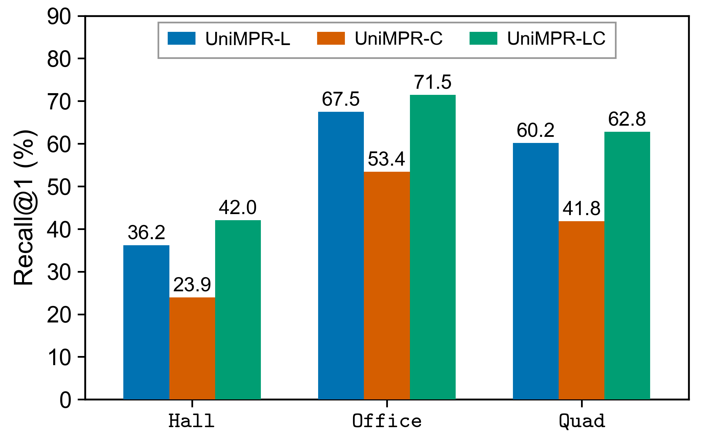
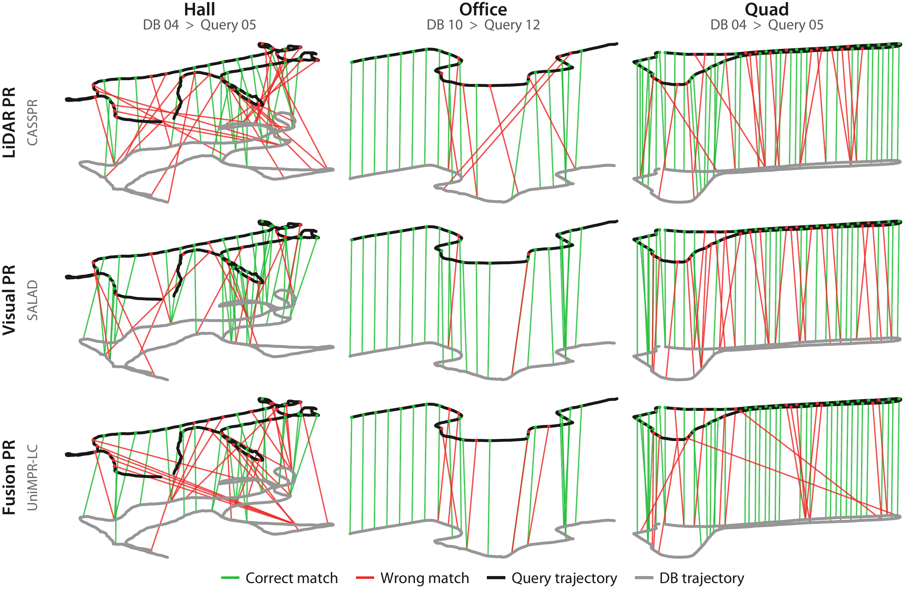

Place recognition under structural change
Benchmark
LiDAR, visual, and multi-sensor fusion place recognition across evolving construction sites.
Evaluation protocol
Session pairing and evaluation workflow
The latest session at each site is the query set. Each earlier session is evaluated as a separate database, using identical samples and ground-truth labels across methods.
Hall
01–04 → 05
4 session pairs · 1 m sampling
Office
01–11 → 12
11 session pairs · 5 m sampling
Quad
01–04 → 05
4 session pairs · 5 m sampling
- 01
Select keyframes
Sample by 3D displacement: 1 m in Hall and 5 m in Office and Quad.
- 02
Pair observations
Use a single LiDAR scan and the nearest RGB image within 100 ms.
- 03
Extract features
Use pretrained weights without fine-tuning on ConPR++.
- 04
Search the database
Retrieve from the entire sampled database for each session pair.
Positive pairs
A query–database pair is positive only when both conditions hold:
Visually Grounded Temporal Change Ratio
TCRVG quantifies structural and appearance changes between sessions. Geometric changes are identified first; DINOv2 features measure appearance differences in matched regions. The final score averages both comparison directions.

Baseline configurations
| Method | Modality | Weights | Input | Retrieval |
|---|---|---|---|---|
| SOLiD | LiDAR | None | 3–80 m range; 1 m voxel | Cosine |
| UniMPR-L / C / LC | LiDAR / visual / fusion | Shared | Polar BEV 200 × 900; RGB 336 × 336 | Euclidean |
| CASSPR | LiDAR | USyd | 4,096 points; range <100 m | Euclidean |
| BEVPlace++ | LiDAR | KITTI | Density BEV 201 × 201; ±40 m XYZ crop | Euclidean |
| SALAD | Visual | GSV-Cities | RGB 322 × 322 | Cosine |
| SelaVPR++ | Visual | Unified | RGB 322 × 322 | Cosine |
| ImAge | Visual | Unified | RGB 322 × 322 | Cosine |
| SALAD+CASSPR | Fusion | Combined | SALAD and CASSPR inputs | Mean cosine |
| MinkLoc++ | Fusion | Oxford | 4,096 points; RGB 240 × 320 | Euclidean |
| UMF | Fusion | Oxford | 4,096 points; RGB 240 × 320 | Global + reranking |
Benchmark results
Quantitative results
Hall · LiDAR · Recall@1 (%)
| DB → Query | TCR_VG | SOLiD | UniMPR-L | CASSPR | BEVPlace++ |
|---|---|---|---|---|---|
| 04 → 05 | 0.444 | 52.08 | 41.67 | 45.83 | 29.17 |
| 03† → 05 | 0.464 | 41.51 | 54.72 | 49.06 | 49.06 |
| 02 → 05 | 0.564 | 15.38 | 15.38 | 17.95 | 25.64 |
| 01 → 05 | 0.664 | 20.83 | 27.08 | 14.58 | 12.50 |
Bold: best; underlined: second-best † Night database session.
Precision–recall curves Office

TCRVG vs. Recall@1 Hall

All results and metrics
LiDAR place recognition
| Site | DB → Query | TCRVG | SOLiD | UniMPR-L | CASSPR | BEVPlace++ | ||||||||
|---|---|---|---|---|---|---|---|---|---|---|---|---|---|---|
| AUC | R@1 (%) | F1max | AUC | R@1 (%) | F1max | AUC | R@1 (%) | F1max | AUC | R@1 (%) | F1max | |||
| Hall | 04 → 05 | 0.444 | 0.1441 | 52.08 | 0.2684 | 0.1189 | 41.67 | 0.1948 | 0.1409 | 45.83 | 0.2510 | 0.1101 | 29.17 | 0.2244 |
| 03† → 05 | 0.464 | 0.1830 | 41.51 | 0.2869 | 0.1404 | 54.72 | 0.2473 | 0.1810 | 49.06 | 0.2604 | 0.1777 | 49.06 | 0.2683 | |
| 02 → 05 | 0.564 | 0.0431 | 15.38 | 0.0974 | 0.0520 | 15.38 | 0.1250 | 0.0456 | 17.95 | 0.1117 | 0.0606 | 25.64 | 0.1667 | |
| 01 → 05 | 0.664 | 0.0959 | 20.83 | 0.1808 | 0.1157 | 27.08 | 0.1933 | 0.0932 | 14.58 | 0.1622 | 0.0869 | 12.50 | 0.1806 | |
| Office | 11† → 12 | 0.501 | 0.2736 | 53.85 | 0.3333 | 0.5144 | 84.62 | 0.5128 | 0.5600 | 69.23 | 0.6032 | 0.4158 | 65.38 | 0.4375 |
| 10 → 12 | 0.210 | 0.3306 | 50.00 | 0.3478 | 0.5441 | 65.38 | 0.5833 | 0.6381 | 73.08 | 0.6557 | 0.4672 | 65.38 | 0.4681 | |
| 09 → 12 | 0.180 | 0.3896 | 55.17 | 0.4255 | 0.6428 | 75.86 | 0.6452 | 0.7327 | 79.31 | 0.6849 | 0.4824 | 65.52 | 0.4906 | |
| 08 → 12 | 0.340 | 0.3743 | 60.00 | 0.3673 | 0.4966 | 72.00 | 0.4706 | 0.6193 | 80.00 | 0.5862 | 0.3825 | 56.00 | 0.4706 | |
| 07 → 12 | 0.284 | 0.2454 | 53.57 | 0.3226 | 0.4499 | 67.86 | 0.4948 | 0.5384 | 78.57 | 0.6214 | 0.3356 | 50.00 | 0.4337 | |
| 06 → 12 | 0.260 | 0.3148 | 65.38 | 0.4000 | 0.4871 | 76.92 | 0.5333 | 0.5642 | 80.77 | 0.6133 | 0.4206 | 65.38 | 0.4615 | |
| 05 → 12 | 0.326 | 0.2986 | 56.25 | 0.4000 | 0.3822 | 56.25 | 0.4000 | 0.4942 | 68.75 | 0.4865 | 0.2620 | 62.50 | 0.3333 | |
| 04 → 12 | 0.406 | 0.2751 | 42.11 | 0.3478 | 0.4495 | 57.89 | 0.4737 | 0.5685 | 73.68 | 0.6061 | 0.3886 | 57.89 | 0.4667 | |
| 03 → 12 | 0.288 | 0.3729 | 54.55 | 0.3881 | 0.5363 | 68.18 | 0.6000 | 0.5143 | 63.64 | 0.4878 | 0.3553 | 54.55 | 0.4000 | |
| 02† → 12 | 0.507 | 0.2043 | 44.44 | 0.2807 | 0.3922 | 55.56 | 0.4286 | 0.4912 | 83.33 | 0.5625 | 0.3094 | 55.56 | 0.3404 | |
| 01 → 12 | 0.525 | 0.1310 | 28.57 | 0.2857 | 0.2653 | 35.71 | 0.3448 | 0.2000 | 28.57 | 0.3684 | 0.1228 | 14.29 | 0.1818 | |
| Quad | 04 → 05 | 0.224 | 0.4935 | 60.34 | 0.4960 | 0.5426 | 65.52 | 0.5914 | 0.3827 | 67.24 | 0.4725 | 0.2888 | 41.38 | 0.3544 |
| 03 → 05 | 0.313 | 0.5133 | 64.29 | 0.5273 | 0.3701 | 53.57 | 0.4615 | 0.2861 | 51.79 | 0.3700 | 0.1770 | 35.71 | 0.2897 | |
| 02 → 05 | 0.294 | 0.4631 | 61.40 | 0.5128 | 0.3957 | 57.89 | 0.4795 | 0.3850 | 64.91 | 0.4394 | 0.1876 | 35.09 | 0.2788 | |
| 01 → 05 | 0.403 | 0.2533 | 36.00 | 0.4078 | 0.5374 | 68.00 | 0.5631 | 0.4774 | 64.00 | 0.4948 | 0.2324 | 24.00 | 0.3091 | |
Bold: best; underlined: second-best † Night database session.
Visual place recognition
| Site | DB → Query | TCRVG | SALAD | UniMPR-C | SelaVPR++ | ImAge | ||||||||
|---|---|---|---|---|---|---|---|---|---|---|---|---|---|---|
| AUC | R@1 (%) | F1max | AUC | R@1 (%) | F1max | AUC | R@1 (%) | F1max | AUC | R@1 (%) | F1max | |||
| Hall | 04 → 05 | 0.444 | 0.4935 | 70.83 | 0.5396 | 0.1323 | 27.08 | 0.2493 | 0.5203 | 77.08 | 0.5435 | 0.4422 | 72.92 | 0.4923 |
| 03† → 05 | 0.464 | 0.5847 | 62.26 | 0.5830 | 0.1915 | 32.08 | 0.2857 | 0.5176 | 60.38 | 0.5398 | 0.4866 | 54.72 | 0.5092 | |
| 02 → 05 | 0.564 | 0.2916 | 53.85 | 0.3713 | 0.0406 | 12.82 | 0.1164 | 0.2556 | 53.85 | 0.3750 | 0.2458 | 46.15 | 0.3226 | |
| 01 → 05 | 0.664 | 0.3191 | 56.25 | 0.4088 | 0.0649 | 20.83 | 0.1361 | 0.2020 | 56.25 | 0.3089 | 0.2497 | 45.83 | 0.3348 | |
| Office | 11† → 12 | 0.501 | 0.4953 | 65.38 | 0.5484 | 0.2186 | 42.31 | 0.3288 | 0.5670 | 69.23 | 0.5862 | 0.4928 | 65.38 | 0.6129 |
| 10 → 12 | 0.210 | 0.6528 | 92.31 | 0.6265 | 0.4644 | 61.54 | 0.4737 | 0.6799 | 88.46 | 0.6452 | 0.6983 | 80.77 | 0.6133 | |
| 09 → 12 | 0.180 | 0.7585 | 86.21 | 0.6944 | 0.5504 | 65.52 | 0.5783 | 0.7376 | 89.66 | 0.7119 | 0.7780 | 86.21 | 0.7000 | |
| 08 → 12 | 0.340 | 0.5668 | 80.00 | 0.5316 | 0.4248 | 52.00 | 0.4348 | 0.5629 | 76.00 | 0.5714 | 0.5583 | 80.00 | 0.5091 | |
| 07 → 12 | 0.284 | 0.5864 | 89.29 | 0.5593 | 0.3704 | 57.14 | 0.4737 | 0.5844 | 89.29 | 0.5686 | 0.5690 | 82.14 | 0.5679 | |
| 06 → 12 | 0.260 | 0.5475 | 84.62 | 0.5682 | 0.3144 | 61.54 | 0.3689 | 0.5905 | 84.62 | 0.6207 | 0.5505 | 84.62 | 0.5854 | |
| 05 → 12 | 0.326 | 0.5122 | 75.00 | 0.5625 | 0.2989 | 56.25 | 0.3200 | 0.4884 | 56.25 | 0.5517 | 0.4236 | 62.50 | 0.4746 | |
| 04 → 12 | 0.406 | 0.6579 | 84.21 | 0.6102 | 0.2411 | 52.63 | 0.2564 | 0.6249 | 78.95 | 0.6038 | 0.5891 | 68.42 | 0.5500 | |
| 03 → 12 | 0.288 | 0.5547 | 81.82 | 0.5714 | 0.3380 | 63.64 | 0.4225 | 0.5737 | 81.82 | 0.5667 | 0.5244 | 86.36 | 0.5679 | |
| 02† → 12 | 0.507 | 0.4187 | 61.11 | 0.4615 | 0.2129 | 33.33 | 0.3077 | 0.5483 | 72.22 | 0.5263 | 0.3977 | 55.56 | 0.4151 | |
| 01 → 12 | 0.525 | 0.4855 | 42.86 | 0.5455 | 0.0813 | 21.43 | 0.2353 | 0.3627 | 35.71 | 0.4706 | 0.3889 | 28.57 | 0.5405 | |
| Quad | 04 → 05 | 0.224 | 0.3165 | 58.62 | 0.3819 | 0.2457 | 50.00 | 0.3279 | 0.3539 | 62.07 | 0.4029 | 0.3100 | 56.90 | 0.3934 |
| 03 → 05 | 0.313 | 0.2782 | 53.57 | 0.3421 | 0.2331 | 44.64 | 0.3382 | 0.2941 | 51.79 | 0.3842 | 0.3024 | 60.71 | 0.3656 | |
| 02 → 05 | 0.294 | 0.3329 | 56.14 | 0.4091 | 0.1895 | 31.58 | 0.2826 | 0.4017 | 64.91 | 0.4480 | 0.3524 | 64.91 | 0.4295 | |
| 01 → 05 | 0.403 | 0.4442 | 52.00 | 0.5472 | 0.3803 | 40.00 | 0.4444 | 0.6250 | 68.00 | 0.6383 | 0.5939 | 68.00 | 0.5934 | |
Bold: best; underlined: second-best † Night database session.
Fusion place recognition
| Site | DB → Query | TCRVG | SALAD+CASSPR | UniMPR-LC | MinkLoc++ | UMF | ||||||||
|---|---|---|---|---|---|---|---|---|---|---|---|---|---|---|
| AUC | R@1 (%) | F1max | AUC | R@1 (%) | F1max | AUC | R@1 (%) | F1max | AUC | R@1 (%) | F1max | |||
| Hall | 04 → 05 | 0.444 | 0.5452 | 77.08 | 0.5753 | 0.1240 | 50.00 | 0.2091 | 0.1325 | 27.08 | 0.2288 | 0.1903 | 29.17 | 0.2406 |
| 03† → 05 | 0.464 | 0.6163 | 62.26 | 0.5907 | 0.1412 | 56.60 | 0.2640 | 0.2361 | 39.62 | 0.2978 | 0.3067 | 43.40 | 0.3443 | |
| 02 → 05 | 0.564 | 0.3261 | 53.85 | 0.3708 | 0.0897 | 23.08 | 0.1408 | 0.1041 | 17.95 | 0.1739 | 0.0786 | 20.51 | 0.1463 | |
| 01 → 05 | 0.664 | 0.3435 | 54.17 | 0.4261 | 0.1092 | 33.33 | 0.2093 | 0.0555 | 16.67 | 0.1067 | 0.0508 | 20.83 | 0.1058 | |
| Office | 11† → 12 | 0.501 | 0.5243 | 69.23 | 0.5714 | 0.5450 | 80.77 | 0.5161 | 0.2340 | 46.15 | 0.3500 | 0.2717 | 38.46 | 0.3774 |
| 10 → 12 | 0.210 | 0.6661 | 92.31 | 0.6098 | 0.5933 | 76.92 | 0.6197 | 0.3196 | 61.54 | 0.4146 | 0.5086 | 46.15 | 0.5357 | |
| 09 → 12 | 0.180 | 0.7688 | 86.21 | 0.6875 | 0.6937 | 79.31 | 0.6462 | 0.4044 | 58.62 | 0.5172 | 0.4764 | 65.52 | 0.5915 | |
| 08 → 12 | 0.340 | 0.5754 | 80.00 | 0.5405 | 0.5135 | 72.00 | 0.4810 | 0.2802 | 56.00 | 0.3797 | 0.2652 | 48.00 | 0.3600 | |
| 07 → 12 | 0.284 | 0.6010 | 89.29 | 0.5872 | 0.4808 | 75.00 | 0.5057 | 0.2497 | 42.86 | 0.3214 | 0.3000 | 46.43 | 0.3860 | |
| 06 → 12 | 0.260 | 0.5653 | 84.62 | 0.5882 | 0.5127 | 76.92 | 0.5476 | 0.2598 | 38.46 | 0.3600 | 0.3582 | 46.15 | 0.3934 | |
| 05 → 12 | 0.326 | 0.5371 | 75.00 | 0.5806 | 0.4122 | 56.25 | 0.4103 | 0.2678 | 31.25 | 0.3721 | 0.3639 | 43.75 | 0.4667 | |
| 04 → 12 | 0.406 | 0.6582 | 84.21 | 0.5862 | 0.4884 | 73.68 | 0.5500 | 0.3529 | 63.16 | 0.4118 | 0.2441 | 31.58 | 0.3860 | |
| 03 → 12 | 0.288 | 0.5636 | 81.82 | 0.5714 | 0.5589 | 77.27 | 0.6133 | 0.3020 | 54.55 | 0.4138 | 0.3120 | 68.18 | 0.3830 | |
| 02† → 12 | 0.507 | 0.4549 | 61.11 | 0.4865 | 0.4239 | 61.11 | 0.4878 | 0.1324 | 27.78 | 0.2264 | 0.1870 | 11.11 | 0.3182 | |
| 01 → 12 | 0.525 | 0.4764 | 42.86 | 0.5405 | 0.2696 | 28.57 | 0.3448 | 0.1061 | 21.43 | 0.2800 | 0.1186 | 14.29 | 0.1951 | |
| Quad | 04 → 05 | 0.224 | 0.3491 | 65.52 | 0.4176 | 0.5403 | 70.69 | 0.5786 | 0.1978 | 37.93 | 0.2478 | 0.1582 | 32.76 | 0.2564 |
| 03 → 05 | 0.313 | 0.2888 | 58.93 | 0.3425 | 0.3785 | 53.57 | 0.4568 | 0.1330 | 21.43 | 0.2378 | 0.1065 | 26.79 | 0.2051 | |
| 02 → 05 | 0.294 | 0.3575 | 56.14 | 0.4186 | 0.4021 | 61.40 | 0.5000 | 0.1334 | 17.54 | 0.2286 | 0.1187 | 28.07 | 0.2683 | |
| 01 → 05 | 0.403 | 0.4970 | 52.00 | 0.5684 | 0.5751 | 68.00 | 0.5743 | 0.2512 | 28.00 | 0.3185 | 0.3302 | 28.00 | 0.4063 | |
Bold: best; underlined: second-best † Night database session.
Cross-modality analysis
Modality comparison
Strong visual baselines and simple score-level fusion perform well in Office. Across all three sites, UniMPR's joint LiDAR–camera input improves on both of its unimodal configurations.


Retrieval examples
